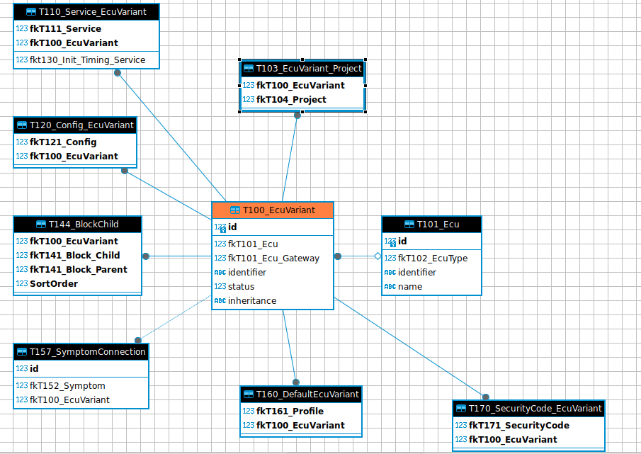

Vida database analysis¶
The main focus is the CARCOM database. (since guess, here is the CAN messages get assembled or translated)
something key is the ecu-identification
As a starting point the diagnostic session was used. Looking up 31254684 AC diagnosticPartNO in T100, gave EcuvariantID = 2013.
it refers to T101 and from there to T102
so here I find identifier : 372302, CEM (this also is present in XML files) Suppose this is the CEM under the glove box.
T120 links to T121
Here if find “29” which refers to extended CANBUS ID
